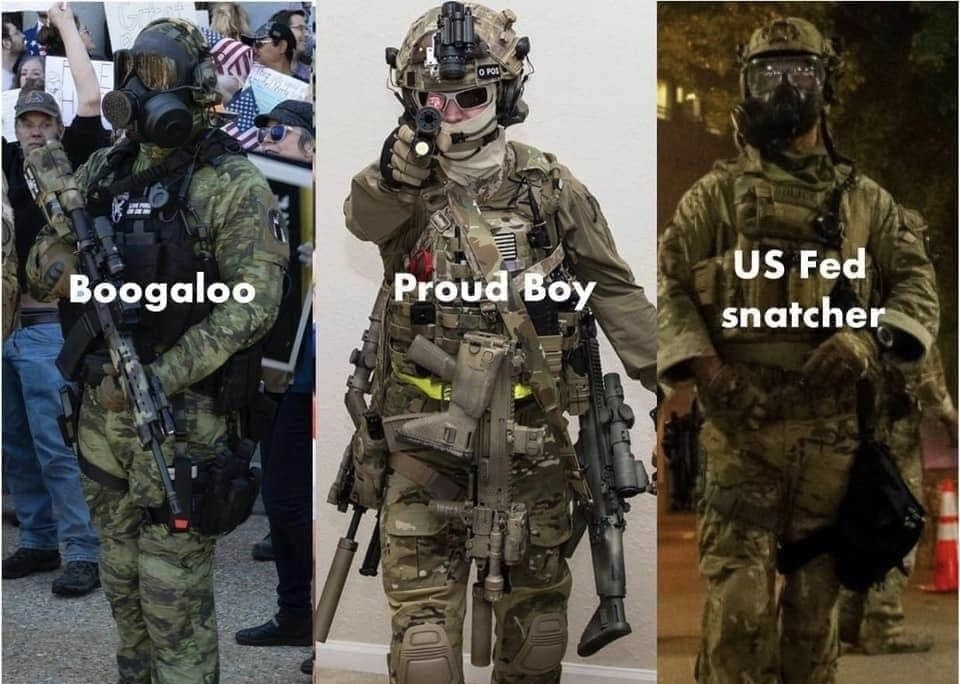

Portland: America's Modern Experiment with Fascism.
Issue One
Portland, Oregon. Quite the conundrum. Federal agents have run amok in the city, black-bagging (kidnapping) innocent protesters refusing to identify themselves, breaking the hand of a calm Navy veteran in two places, and tear-gassing groups of Portland moms without the consent of the city>. Is this an overreach of power? Absolutely, it’s even experimental fascism.
But first, some historical context.
Overt fearmongering about anarchism, rioting, and looting is all the federal government needs to provide a veneer of justification. In fact, this lie of pre-emptive self-defense has always been an easy out for the government, from the Native American genocide to the HUAC committee of the Red Scare, to separate sentencing for black people during the war on drugs, to the Iraq War weapons of mass destruction lie, to the installation of the Patriot Act, and even to the plan touted by the CIA to bomb Miami and target Cubans, just to make Fidel Castro look bad, crocodile tear self-defense as justification to act on aggression is a staple in the American propaganda playbook.
Let’s talk about what exactly has happened in Portland.
The first question we must address is where has the violence been? I’ll grant that there have been some hotspots of vandalism, but the $5,000 in federal property damage in Portland, reported by the Department of Homeland Security, is not a justification for federal agents to begin swooping in and literally kidnapping people, nevertheless innocent ones.
Take Mark Pettibone, an innocent protestor black-bagged before he was told what he was being arrested for and by whom. These arrests target and profile anybody dressed in black with a mask on. NPR’s interview reads: “Blinded by his hat, in an unmarked minivan full of armed people dressed in camouflage and body armor who hadn't identified themselves, Pettibone said he was driven around downtown before being unloaded inside a building. He wouldn't learn until after his release that he had been inside the federal courthouse.” According to Pettibone’s interview with the Washington Post, “he did not know whether the men were police or far-right extremists, who frequently don military-like outfits and harass left-leaning protesters in Portland.” His fear of, extremist right-wing violence is entirely justified, after two members of the >Boogaloo Boys murdered multiple law enforcement officials in California in order to accelerate a race war, as well as clips being leaked of police officers communicating with the Proud Boys in Salem, Oregon (not far from Portland) to go inside before they begin gassing protestors. And frankly, I doubt any of us would be able to tell the difference between alt-right terrorists and federal agents if the soldiers failed to identify themselves.

On Friday, U.S. Attorney Billy J. Williams, the Department of Justice's chief law enforcement
official in Oregon, called for an inspector general investigation into DHS personnel over reports of two
protesters being detained without probable cause.
In response to national outcry against this abuse of power, acting DHS Secretary Chad Wolf, an unelected official, has demonstrated a blatant disregard for the Constitution, stating in an interview “I don't need invitations by the state, state mayors, or state governors to do our job. We're going to do that, whether they like us there or not."
And to no surprise, when Sean Hannity of Fox News proposed a hypothetical during an interview with Senator Tom Cotton of Arkansas, where federal officers fire live ammunition on protestors, the far-right Cotton conveniently forgot about due process and the Constitution and determines that the protestors, or as he so eloquently puts it, “[those] pelting frozen water bottles and throwing sharpened sticks” are to blame for their deaths, a scenario oddly reminiscent of a historical moment in American history where soldiers were being harassed by colonists, and shot and killed multiple: the Boston Massacre.
Additionally, keep in mind that Antifa protestors have killed not a single soul to date and far-right terrorism is responsible for 73% of politically-motivated deaths since 9/11. This would suggest that the so-called anarchists are basically a non-threat in comparison to the far-right extremists.
In fact, recent protests have overwhelmingly been peaceful, as Zoe Carpenter, a Portland resident, wrote: “The mood in the crowd downtown is often jovial—at least until law enforcement arrives—with people dancing and chanting and giving out vegan stew, barbecue, and donated bike helmets. On Friday night around 10:30 PM, shortly after federal forces started spraying tear gas, filling a city block with noxious fumes”. This anecdote is also consistent with conservative Greg Doucette’s observations, who has compiled a list of over 800 unprovoked police brutality incidents during only the George Floyd protests.
This type of mass hysteria and fearmongering has been used by the American government to repeatedly beat American dissidents and patriots into submission. Never forget the six Ferguson organizers that mysteriously died, or one of their predecessors, Fred Hampton, a 21-year-old working on bringing together gangs and races through class solidarity of the Black Panther Party. The young activist was the target of an illegal and immoral COINTELPRO FBI program and assassinated, along with fellow Panther Mark Clark, by the Chicago Police Department and FBI in his home next to his pregnant wife. In fact, other Panthers in the apartment heard this exchange between officers during the break-in:
“That's Fred Hampton.”
"Is he dead?... Bring him out."
"He's barely alive."
"He'll make it."
The injured Panthers said they heard two shots. According to Hampton's supporters, the shots were fired point-blank at Hampton's head. According to Deborah Johnson, an officer then said:
"He's good and dead now."
Each panther in the room that night was charged with manslaughter as the police publicly claimed: “the arrest team had been attacked by the "violent" and "extremely vicious" Panthers and had defended themselves accordingly by responding with fatal shots. In a second press conference on December 8, the police leadership praised the assault team for their "remarkable restraint", "bravery", and "professional discipline" in not killing all the Panthers present.”
Later evidence was uncovered that exonerated the Panthers, as only one bullet was shot from Clark’s shotgun into the ceiling while ninety-nine bullets were fired by the Chicago Police Department.
Situations like Portland and Chicago demonstrate the cognitive dissonance and manipulative nature of the government. It’s easy to shout buzz words like freedom and liberty, as long as the people continue to look past the ever-increasing body count.
And if you still have reservations on whether or not true fascism and forcible suppression of the opposition is in the works, I believe that when federal agents and the president block footage of the results of their own immigration policies before election day, it’s safe to say that our constitutional freedoms of speech, the press, and protests are merely politically charged suggestions for our authorities.
Please don’t buy into the tactical fearmongering of the United States government, which has time and time again been a dangerous front for real casualties. Question the authorities, especially under iniquitous circumstances. We must be able to recognize the warning signs of a fascist police-state before the bodies begin piling up, and Portland very well may be ground zero for the next wave of totalitarianism.
In these times, we should remember American historian Howard Zinn’s timeless words: “Historically, the most terrible things - war, genocide, and slavery - have resulted not from disobedience, but from obedience.”
In solidarity.
*The author does not claim to represent all the opinions of all the members of the Postpartisan in this essay.
Rohin is a senior at Montgomery High School that likes basketball, video games, rap/hip-hop, empathy, and leftist philosophy. Official Bernie Sanders simp. Frankly, it is harassment for anyone to have expectations of him.